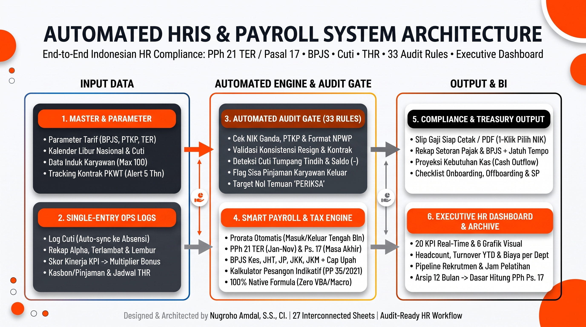

End-to-End Automated HRIS, PPh 21 TER & Payroll Architecture: Rekayasa Sistem 27 Modul Tanpa Macro (Zero-VBA) End-to-End Automated HRIS, PPh 21 TER & Payroll Architecture: Engineering a 27-Module Zero-Macro Engine
Ringkasan Eksekutif (BLUF) Executive Summary (BLUF)
Bagaimana membangun arsitektur HRIS & Payroll 27-sheet yang akurat 100%, mematuhi regulasi perpajakan PPh 21 TER terbaru (PP 58/2023) & rekonsiliasi Pasal 17 akhir tahun, menghitung BPJS dan pesangon PP 35/2021 secara presisi, serta memiliki 33 aturan audit otomatis tanpa risiko keamanan macro/VBA. How to architect an enterprise-grade 27-sheet HRIS & Payroll system with 100% deterministic accuracy, full compliance with Indonesia's PPh 21 TER (PP 58/2023) and year-end Pasal 17 reconciliation, automated BPJS and PP 35/2021 severance calculations, and 33 automated internal audit rules—all engineered with zero VBA macros.

Diagram Alur Arsitektur Sistem HRIS & Penggajian 27 Modul (Zero-Macro) karya Nugroho Amdal System Architecture Flowchart of the 27-Module Zero-Macro HRIS & Payroll Engine by Nugroho Amdal
Tantangan Kritis: Kompleksitas Regulasi Ketenagakerjaan Indonesia & Risiko Keamanan Macro
The Critical Challenge: Indonesian Labor Complexity & Macro Security Risks
Penggajian di Indonesia merupakan salah satu domain operasional HR yang paling rentan terhadap kesalahan (*high-risk & error-prone*). Setiap praktisi HR dan Finance dihadapkan pada regulasi ketenagakerjaan yang dinamis, mulai dari skema tarif efektif rata-rata PPh 21 TER (PP No. 58 Tahun 2023 / PMK 168/2023) Kategori A, B, dan C, penyesuaian tarif progresif Pasal 17 UU PPh pada Masa Pajak Terakhir (Desember atau saat karyawan resign), batasan upah tertinggi (*wage ceiling*) BPJS Ketenagakerjaan & Kesehatan, hingga kalkulasi hak kompensasi dan pesangon berdasarkan PP No. 35 Tahun 2021.
Payroll in Indonesia represents one of the most high-risk operational domains in Human Resources. HR and Finance practitioners must navigate continuously shifting regulations: average effective tax rates under PPh 21 TER (Government Regulation No. 58/2023 / PMK 168/2023) across Categories A, B, and C, progressive tax reconciliation under Article 17 in the final tax period (December or employee termination), statutory BPJS wage ceilings, and severance/compensation mandates under Government Regulation No. 35/2021.
Di saat yang sama, banyak perusahaan terjebak dalam dua jebakan ekstrem: membayar ratusan juta rupiah untuk software HRIS enterprise kaku yang sulit dikustomisasi, atau mengandalkan spreadsheet manual dengan skrip VBA/Macro usang. Sayangnya, file spreadsheet berbasis macro (.xlsm) sering kali diblokir oleh firewall dan antivirus IT enterprise karena kerentanan keamanan siber, tidak dapat diakses secara mulus via cloud browser, serta mudah rusak (*corrupted*) saat diedit bersama secara kolaboratif.
Meanwhile, organizations frequently fall into two traps: spending thousands of dollars on rigid enterprise HRIS software that resists customization, or relying on fragile legacy spreadsheets packed with VBA macros. Macro-enabled workbooks (.xlsm) are routinely blocked by enterprise IT security policies due to script injection risks, fail to operate smoothly on modern cloud platforms, and easily corrupt under concurrent multi-user workflows.
Solusi & Arsitektur: 27 Modul Terintegrasi Tanpa Macro (Zero-Macro Deterministic Engine)
The Solution: 27 Integrated Modules Engineered with Zero VBA/Macros
Untuk memecahkan masalah ini secara tuntas, saya merancang sistem arsitektur spreadsheet 27 modul tanpa macro (Zero-Macro System). Seluruh kalkulasi beroperasi 100% menggunakan formula native relasional tingkat lanjut (seperti kombinasi dinamis INDEX, XLOOKUP, FILTER, LAMBDA, LET, dan logika boolean) yang aman, cepat, dan sepenuhnya cloud-native.
To solve this sustainably, I engineered a comprehensive 27-module spreadsheet architecture entirely free of macros (Zero-Macro System). The entire calculation pipeline operates 100% on advanced native relational formulas (such as dynamic INDEX, XLOOKUP, FILTER, LAMBDA, LET, and boolean arrays)—ensuring complete cyber safety, instantaneous calculation speed, and cloud-native resilience.
Log Cuti terhubung langsung ke Absensi & Penggajian. Sekali entri cuti/izin langsung memotong kuota tahunan, mencatat rekap kehadiran, dan menghitung potongan unpaid leave otomatis tanpa input manual berulang. Leave logs pipe directly into Attendance & Payroll. A single leave entry deducts annual balances, marks daily attendance registers, and computes unpaid salary deductions instantly without duplicate data entry.
Kalkulasi prorata gaji untuk karyawan join di tengah bulan atau cut-off resign dihitung secara otomatis berdasarkan rasio hari kerja aktual vs hari kerja efektif bulanan. Salary pro-rata for mid-month hires and mid-period terminations calculated automatically based on actual workdays versus monthly calendar work schedules.
Penerapan TER Kategori A, B, C (Masa Jan-Nov) dengan auto-switch ke tarif progresif Pasal 17 pada Masa Terakhir (Desember/Resign), menghasilkan formulir 1721-A1 siap lapor. Applies TER Category A, B, C for Jan–Nov periods and automatically executes progressive Article 17 reconciliation on month 12 or termination, generating ready-to-file 1721-A1 forms.
Pemisahan akurat iuran perusahaan dan pekerja untuk JKK, JKM, JHT, JP, dan BPJS Kesehatan dengan batas atas upah (*wage ceiling*) dinamis yang mudah diperbarui. Accurate employer/employee cost splitting for JKK, JKM, JHT, JP, and BPJS Health with configurable dynamic statutory wage ceilings.
Fitur Strategis: Proteksi Legal PKWT, Kalkulator Pesangon & 33 Aturan Audit Otomatis
Strategic Features: PKWT Legal Guardrails, PP 35/2021 Severance & 33 Audit Checks
Sistem ini tidak hanya menghitung slip gaji, namun berfungsi sebagai tameng kepatuhan hukum tenaga kerja (Legal Compliance Shield):
This architecture goes far beyond printing pay slips; it acts as an enterprise Labor Legal Compliance Shield:
- Early Warning Alert Kontrak PKWT (Batas 5 Tahun UU Cipta Kerja): Memberikan notifikasi otomatis 60, 30, dan 14 hari sebelum masa kontrak berakhir, serta menghitung total akumulasi durasi agar perusahaan tidak secara tidak sengaja melanggar batas legal 5 tahun PKWT yang dapat mengubah status karyawan menjadi PKWTT secara hukum. Provides automated visual alerts 60, 30, and 14 days prior to contract expiration, and tracks cumulative contract durations to prevent unintentional breach of the statutory 5-year fixed-term limit.
- Kalkulator Pesangon & Uang Kompensasi (PP No. 35/2021): Modul otomatis menghitung Uang Pesangon (UP), Uang Penghargaan Masa Kerja (UPMK), dan Uang Penggantian Hak (UPH) berdasarkan alasan pemutusan hubungan kerja serta menghitung uang kompensasi PKWT yang wajib dibayarkan di akhir periode kontrak. Automatically computes statutory Severance Pay (UP), Long Service Pay (UPMK), and Rights Compensation (UPH) mapped to termination reasons, as well as mandatory PKWT compensation payouts.
- Sheet Validasi "Cek Data" (33 Aturan Audit Internal Otomatis): Sebelum payroll dikunci dan dikirim ke bagian Finance, lembar validasi khusus memeriksa 33 potensi anomali secara instan—mulai dari nomor rekening tidak valid/kosong, duplikasi NIK, anomali status PTKP, selisih tunjangan tetap vs tidak tetap, hingga ketidaksesuaian rekap cuti. Hasilnya: nol salah transfer dan nol sengketa gaji. Prior to payroll finalization and disbursement, a dedicated validation sheet verifies 33 potential data anomalies instantly—flagging missing bank accounts, duplicate IDs, invalid tax statuses, allowance imbalances, and leave tally discrepancies with zero tolerance for manual leakage.
- Proyeksi Kebutuhan Kas (Treasury Cash Outflow) & Rekap Setoran: Menghasilkan laporan ringkas untuk departemen Treasury mengenai total dana tunai yang harus disiapkan untuk payroll transfer ke rekening karyawan, setoran PPh 21 via e-Billing Direktorat Jenderal Pajak, dan setoran iuran BPJS ke bank mitra. Outputs concise treasury cash requirement schedules for finance teams, detailing net salary disbursement outlays, PPh 21 e-Billing tax deposits, and monthly BPJS contributions.
- Executive HR Dashboard (20 Key Performance Indicators): Memvisualisasikan metrik strategis bagi jajaran C-suite: total headcount, rasio turnover bulanan & tahunan, rasio biaya gaji terhadap pendapatan (payroll-to-revenue), biaya lembur (overtime), rasio diversitas gender, serta perbandingan anggaran upah vs realisasi. Visualizes strategic talent and fiscal metrics for executive leadership: total headcount, voluntary/involuntary turnover rates, payroll-to-revenue ratio, overtime expenditures, gender diversity breakdown, and budget variance analyses.
Mengapa Zero-Macro Menjadi Standar Baru Keandalan Sistem
Why Zero-Macro Represents the New Standard in Operational Reliability
Banyak yang mengira otomasi tingkat tinggi selalu membutuhkan baris kode VBA/Macro yang rumit. Faktanya, dalam ranah data operasional enterprise, kesederhanaan arsitektural (*architectural simplicity*) adalah kunci ketahanan jangka panjang. Dengan mengeliminasi ketergantungan macro, sistem ini:
Many assume advanced automation requires brittle VBA macros or external software add-ins. In enterprise workforce operations, architectural simplicity is the bedrock of long-term stability. By eliminating macro dependencies, this architecture delivers:
Dapat dibuka di Google Sheets maupun Microsoft Excel tanpa peringatan keamanan (*security warning*), dapat diakses oleh tim HR dan Finance secara bersamaan (multi-user collaboration), serta mudah diaudit oleh auditor internal maupun eksternal KAP.
It opens natively in Google Sheets and Microsoft Excel without security warnings, supports concurrent multi-user collaboration across HR and Finance, and facilitates frictionless auditing for internal controllers and external tax auditors.
Ingin Mempelajari atau Mencoba Langsung Spreadsheet Sistem Ini? Interested in Exploring or Testing This Live System Spreadsheet?
Akses live preview spreadsheet (view-only) untuk melihat formula, arsitektur lembar kerja, dan alur validasi datanya secara transparan. Access the live view-only spreadsheet preview to inspect the exact formula design, sheet relational mapping, and audit flows.